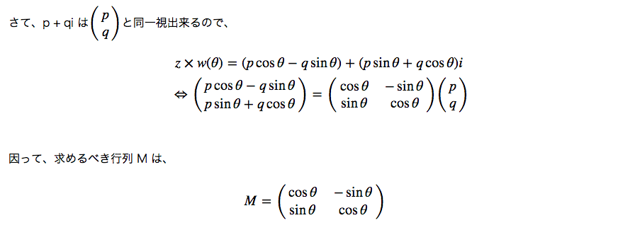

はてなの数式を綺麗にする
はてなの数式を綺麗にするというか、mimetex や Google Chart で書かれた数式を MathJax を用いて描画するようにする Google Chrome 拡張機能をつくりました。
- MathChrome
- レポジトリ はここ。
上のリンクから .crx
ファイルをダウンロードしたら、拡張機能ウインドウを開いてドラッグ・アンド・ドロップすれば使えます。Chrome
Store だかにないのは、あそこに登録するのに $5
もかかるからです。ふざけるな。
こんな感じの記事が、

こうなります：

随分綺麗になりますね！そうそう、今のところは数式は中央揃えになっているので、なんとかしたいです。因みにまったくの余談ですが、はてなで tex 記法使ってる所を自分のところから持ってこようとしたら、そういう記事をはてダで書きまくってたのがちょうど中学三年〜高校二年くらいの時期で、その、なんというか、「因って」「様な」とか「其の」「此の」とか痒い漢字表記が沢山あってなるべく痒くないところを引用するのにとても苦労しました。つらい。
他の選択肢
MathJax を使って数式を綺麗にする Chrome 機能拡張は既に幾つかあって、たとえば MathJax for Chrome というのが似たような用途なんですが、数式っぽい文字列があったら何処でも構わず数式としてレンダリングしようとするので、例えばプログラムのコードが載ってるサイトを開いたらコードが数式としてレンダリングされて悲惨、みたいなことも起きます。なので、何でもかんでもレンダリングするんじゃなくて、取り敢えずはてなの tex 記法を綺麗にする子を作ろう！みたいなノリで作りました。結果的に mimetex と Google Chart の数式を綺麗にする子が出来たので、はてなに限らず使える感じになって幸福です。
あとは Wikipedia with MathJax というのが Wikipedia の数式を綺麗にしてくれたりします。これは僕の拡張とは特に競合しないので、併用をお勧めします。
そんな感じで。なんか適当に作ったものですが役に立てば幸いです。要望とかあったら気が向いたら直すかもしれないし直さないかもしれないです。